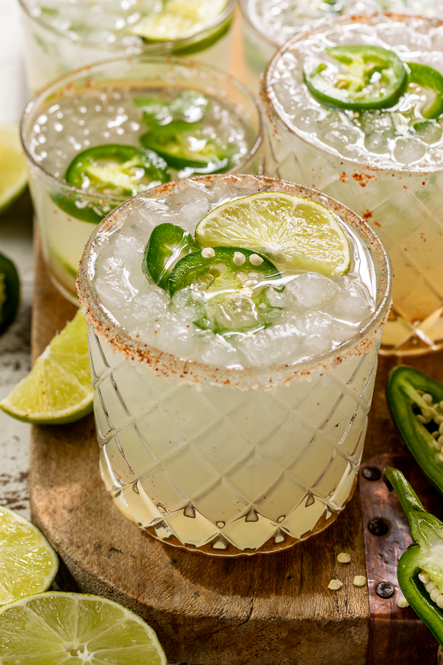

Spicy Margarita

Description
Fresh jalapeños are the key to this wildly popular riff.
This recipe is classic and so good you'll keep coming back for one (or many) margs every weekend!
Ingredients
- 1 lime wedge
- 2 jalapeno coins, seeds removed
- 2 ounces blanco tequila
- 1/2 ounce orange liqueur
- 1 ounce lime juice, freshly squeezed
- 1/2 ounce agave syrup
- Garnish: salt rim
- Garnish: jalapeno coin
Steps
- Rub the rim of a rocks glass with a lime wedge, dip the rim in salt to coat, and set aside.
- Add the jalapeño coins to a shaker and gently muddle.
- Add the blanco tequila, orange liqueur, lime juice, and agave syrup, plus ice, and shake until well-chilled.
- Strain into the prepared glass over fresh ice.
- Garnish with a jalapeño coin.